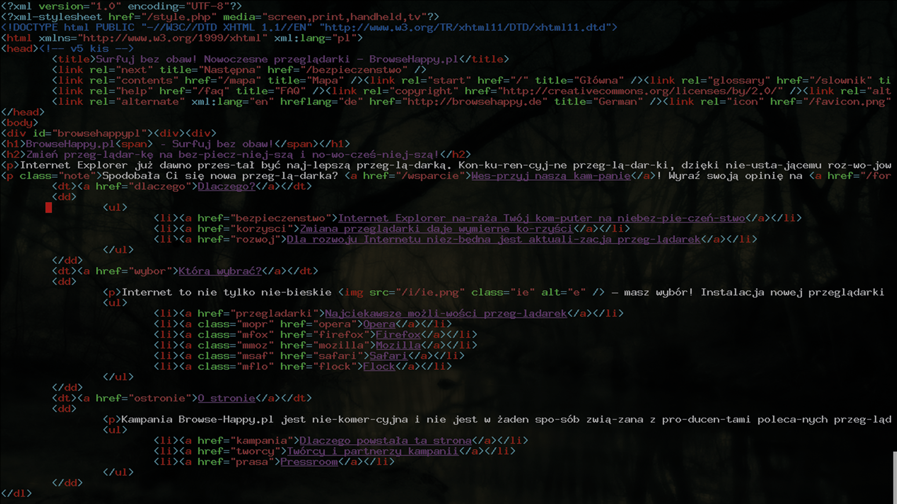
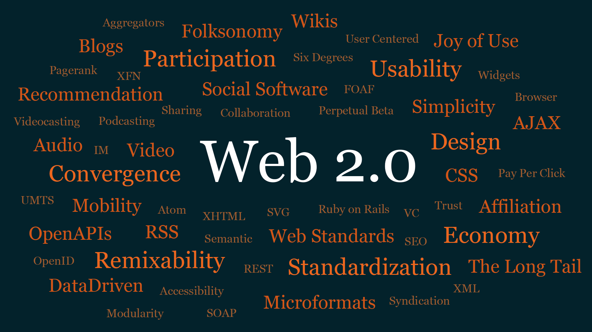
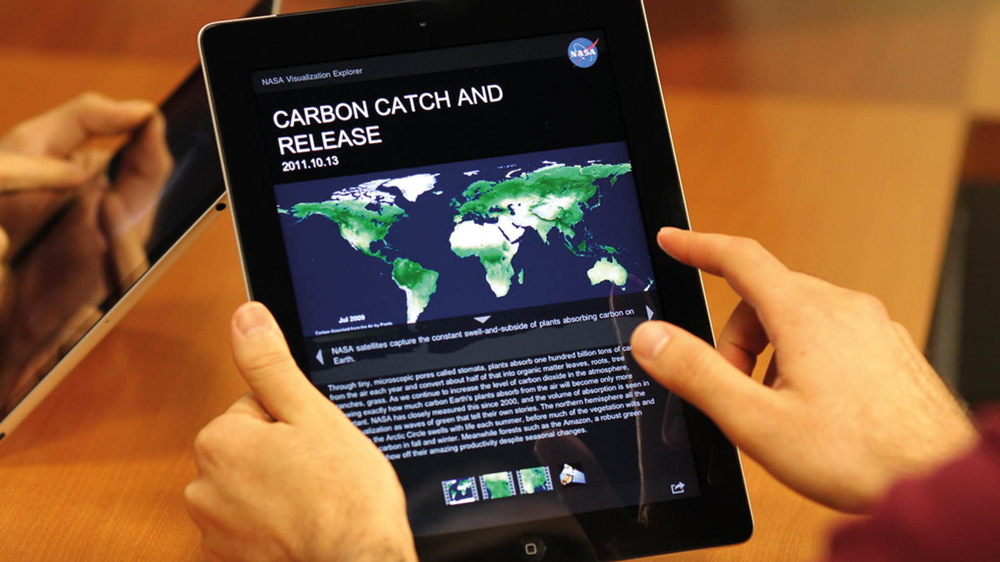

Toen Tim Berners‐Lee besloot om het probleem van informatiebeheer bij CERN op zich te nemen, was internet al een onderdeel van de infrastructuur. Computersystemen van vóór de jaren zestig bestonden voornamelijk uit mainframes bij grote onderzoeks- en onderwijsinstellingen en bedrijven. Niemand had een personal computer bedacht zoals wij ze vandaag kennen. Dit netwerk van netwerken werd voor het eerst gecreëerd in de jaren 1960.
Toen het web in de jaren negentig de wereld begon te veroveren, begonnen ontwerpers te migreren van papier naar pixels. Dankzij de slimme TABLE- en GIF-hacks konden ontwerpers dezelfde soort lay-outs repliceren die ze eerder voor de afgedrukte pagina hadden gemaakt. Die TABLE-lay-outs werden later CSS-lay-outs, maar het fundamentele denken bleef hetzelfde: het browservenster - net als de pagina ervoor - werd behandeld als een bekende beperking waaraan ontwerpers orde oplegden. Ontwerpers waren gewend geraakt aan het kennen van de afmetingen van de rechthoeken die ze binnen ontwerpen. Het web heeft die beperking opgeheven.
De universeel geïnterpreteerde programmeertaal kwam eindelijk aan in 1996. Het werd in tien dagen geschreven door een programmeur van Netscape, genaamd Brendan Eich. De taal heeft enkele naamsveranderingen ondergaan. Eerst heette het Mocha. Toen werd het officieel gelanceerd als LiveScript. Toen kwam de marketingafdeling binnen en hernoemde het JavaScript, in de hoop dat de naam de hype zou overslaan die hoort bij de toen nieuwe Java-taal. In werkelijkheid hebben de talen weinig gemeen.
Na de standaardisatie van HTML-versie 4 publiceerde het World Wide Web Consortium XHTML 1.0 in 1999. Deze geherformuleerde HTML werd volgens de regels van het XML-gegevensformaat geschrevem. Terwijl HTML hoofd- of kleine tagnamen en attributen kan hebben, vereist XML dat ze allemaal in kleine letters zijn. Er waren nog een paar verschillen: alle attributen moesten worden geciteerd, en zelfstandige elementen zoals IMG of BR vereisten een schuine streep. XHTML 1.0 heeft geen nieuwe functies aan de taal toegevoegd. Het was gewoon een strengere manier om opmaak te schrijven.
De opkomst van JavaScript werd in 2005 gestimuleerd met een artikel met de titel Ajax: A New Approach to Web Applications. Met behulp van een subset van JavaScript kon een webbrowser gegevens van een webserver verzenden en ontvangen zonder de hele pagina te vernieuwen. Het resultaat was een soepelere gebruikerservaring. De term Ajax werd bedacht op hetzelfde moment dat een ander neologisme in de hemel was. Tim O'Reilly gebruikte de uitdrukking Web 2.0 om een nieuwe golf van webproducten en -services te beschrijven. Voor grafisch ontwerpers betekende dit afgeronde hoeken en verlopen. Voor ontwikkelaars betekende dit JavaScript en Ajax.
Steve Jobs onthulde een mobiel apparaat dat kan worden gebruikt om op het World Wide Web te surfen. Web-compatibele mobiele apparaten bestonden al vóór de iPhone, maar deze waren meestal beperkt tot het weergeven van een gespecialiseerd mobielvriendelijk bestandsformaat genaamd WML. Zeer weinig apparaten kunnen HTML weergeven. Met de introductie van de iPhone en zijn concurrenten verscheepten draagbare apparaten met moderne webbrowsers die eersteklas burgers op internet konden zijn.
In april 2010 sprak Ethan Marcotte over een interessante denkrichting in de webwereld: responsive design. Hij lichtte hij dit idee toe in een artikel "Responsive Web Design". Het werd gepubliceerd op A List Apart, dezelfde website die tien jaar eerder John Allsopp's A Dao Of Web Design had gepubliceerd. Beide artikelen riepen webontwerpers op om het idee van One Web te omarmen. Maar terwijl A Dao Of Web Design grotendeels werd afgewezen door ontwerpers die vertrouwd zijn met hun WYSIWYG-tools, vond Responsive Web Design een publiek van ontwerpers dat het mobiele raadsel wilde oplossen.
Ondanks het fragiele foutafhandelingsmodel van JavaScript, zijn webontwerpers na verloop van tijd afhankelijker geworden van JavaScript. In 2015 heeft NASA zijn website opnieuw gelanceerd als een web-app. Als je het laatste nieuws over de verkenningsinspanningen van het bureau wilde lezen, moest je eerst drie megabytes JavaScript downloaden en uitvoeren. Deze inhoud - tekst en afbeeldingen - had in de HTML kunnen worden aangeleverd, maar de ontwikkelaars besloten Ajax te gebruiken om deze gegevens op te halen. Totdat al dat JavaScript was geladen, ontleed en uitgevoerd, bleven bezoekers van de site naar een zwarte achtergrond staren.
